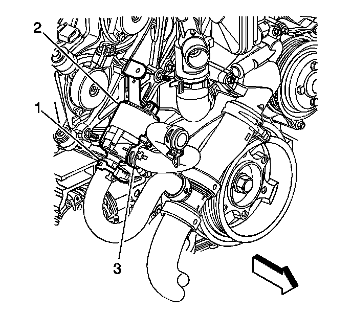
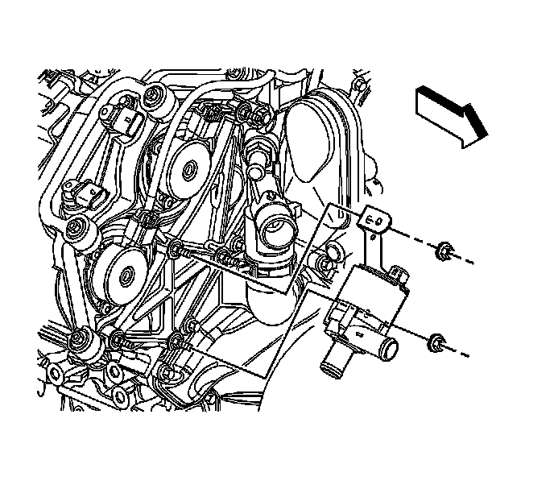

Auxiliary Water Pump Replacement
Auxiliary Water Pump Replacement (4.6L (LH2 - Gas, 8 Cylinder, 4.6L, SFI, V8, DOHC, HO) w/RPOs V03/V92)
Tools Required
J 38185 Hose Clamp Pliers
Removal Procedure
1. Drain the coolant. Refer to Cooling System Draining and Filling (GE 47716 -Vac N Fill Coolant Refill Tool) (Service and Repair)Cooling System Draining and Filling (Static Fill) (Service and Repair) .

2. Using the J 38185 slide the hose clamp down on the hose (3).
3. Disconnect the hose from the auxiliary water pump.
4. Using the J 38185 slide the hose clamp back on the hose (1).
5. Disconnect the hose from the auxiliary water pump.
6. Disconnect the auxiliary water pump electrical connector.

7. Remove the auxiliary water pump nuts.
8. Remove the auxiliary water pump.
Installation Procedure
1. Install the auxiliary water pump.
Notice: Refer to Fastener Notice .
2. Install the auxiliary water pump nuts.
Tighten the nuts to 9 N.m (80 lb in).
3. Connect the auxiliary water pump electrical connector.
4. Connect the hose (3) to the auxiliary water pump.
5. Using the J 38185 slide the hose clamp back into the original position on the hose.
6. Connect the hose (1) to the auxiliary water pump.
7. Using the J 38185 slide the hose clamp back to the original position on the hose.
8. Fill the coolant. Refer to Cooling System Draining and Filling (GE 47716 -Vac N Fill Coolant Refill Tool) (Service and Repair)Cooling System Draining and Filling (Static Fill) (Service and Repair) .